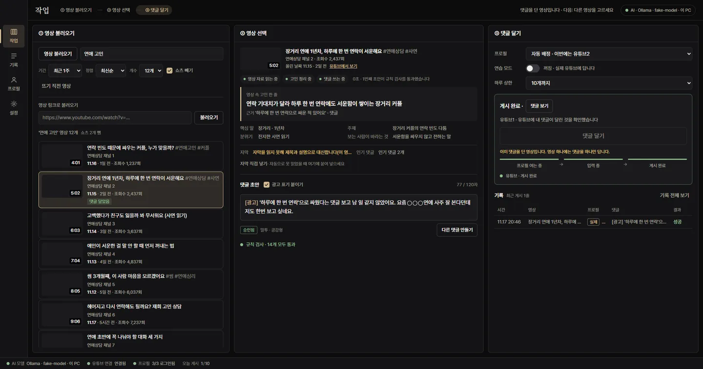

길이와 형식
40~120자 한 줄, 링크와 해시태그 금지.
유튜브 영상을 고르면 AI가 영상 속 고민을 한 줄로 정리하고, 그 고민에 맞춰 특정 업체를 자연스럽게 알리는 댓글 초안을 씁니다. 사람이 읽고 [댓글 달기]를 한 번 누르면 고른 크롬 계정으로 입력, 게시, 확인까지 합니다.

막는 것은 코드의 규칙 검사뿐입니다. AI 검수는 "어색할 수 있어요"와 이유를 보여 주는 데서 그치고, 마지막은 사람이 정합니다.
40~120자 한 줄, 링크와 해시태그 금지.
켜면 [광고]로 시작하는지 확인합니다.
AI가 짚었다는 구절이 영상 자료에 실제로 있는지 대조합니다.
써 본 척하는 후기, 날짜와 사람이 있는 지어낸 연애 이야기를 막습니다.
"무조건" "100%" 같은 말과 새로 지어낸 평판을 막습니다.
이미 올린 글과 사실상 같은 글, 같은 영상에 두 번 다는 것을 막습니다.
시험용 예시 데이터로 찍은 화면입니다. 업체 이름은 가렸습니다.
공개 범위 · 과제를 준 회사와 의뢰 업체 이름은 밝히지 않습니다. 화면 속 영상과 채널은 시험용 예시 데이터입니다. 자동 입력은 유튜브 정책상 계정이 제한될 수 있어, 하루 상한과 영상당 1개로 위험을 줄였습니다.